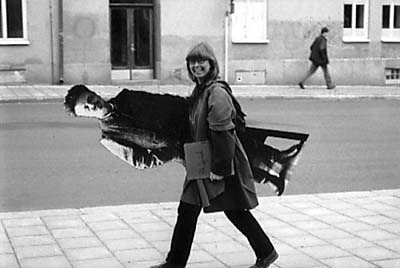
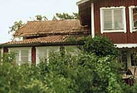
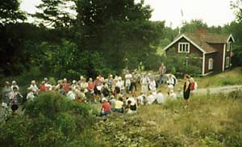
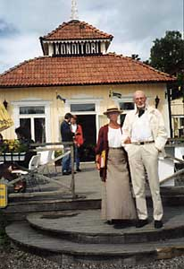
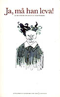
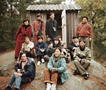

Strindbergsstunder med Anita Persson

Jag, Anita Persson, var, efter många års aktiviteter i Strindbergssällskapet, intendent på Strindbergsmuseet fram till 1994. Därefter är jag vida anlitad föreläsare/kåsör, vandrare och även skribent.
Jag är pedagog och "folkbildare" och anser att författare och deras texter inte enbart är till för att njutas av utan också för att användas i våra dagliga liv i med- som motgångar, för att fylla på tankar, fantasier och möjligheter – som energi – som kunskap – som erfarenhet.
Att exempelvis tillsammans vandra genom den kända eller okända staden där författaren vandrat, där dikterna tillkommit, där dramat utspelar sig, ger nya perspektiv och berikar läsupplevelser och "vardagsvandringar".
Jag vet, då jag har vandrat med August Strindberg sedan 1980 varje vår, sommar, höst och till och med på vintern i snöyra.
År 2003 går vi följande programmerade vandringar oberoende av väder och vind
14 maj August Strindbergs dödsdag
”Ja , dit går vägen uppåt…”
En vandring som följer Strindbergs sista färd 19 maj 1912 från hans bostad Drottninggatan 85 ut till gravplatsen på Norra kyrkogården ”icke i de rikas kvarter på fåfängans marknad”. En vandring också i försoningsdramat ”Stora Landsvägen”s texter.
Samling i Tegnérlunden vid Strindbergmonumentet kl 18.00 (–19.30).
Pris 80 kronor.
Se även tisdag 6 augusti – Hiroshimadagen.
25 maj
”… härd för myggor och spindlar”
Djurgården är fylld av platser från Strindbergs liv och verk. Tidvis förlades boende, morgonpromenader och arbetsgömmen hit. Skådeplats för författarens kulturhistoriska gärningar och ”introduktion” i krogarnas nöjesliv.
Samling Djurgårdsbron/Strandvägen kl 14.00 (–15.30).
Pris 80 kronor.
Se även måndag 9 juni och söndagar 20 juli och 10 augusti.
31 maj

”O, du min grönskande ö, blomkorg i havets råg”
Strindbergs sinnebild för skärgården kan välgrundat anses vara Kymmendö, Hemsö. Hit flydde han i fadersuppror för att skriva och odla och för att njuta av samvaron med sin första familj och vänner.
Vandringen över ön går i ”Hemsöbornas” texter och hus i författarens liv.
Samling Kymmendös båtbrygga kl 10.30 (–12.30).
(Båt från Stockholm kl 08.30, från Saltsjöbaden
kl 09.30. Kontrollera tiderna!).
Pris 80 kronor (exkl resor). Medtag matsäck.
Se även lördag 2 aug.
3 juni
”Morgonen har något med sig som ger ungdom i sinnet”
Vi vandrar Strindbergs morgonpromenad – möter människor på Drottninggatans ”trottoar”, viker av ”i Fredsgatans halvdunkel”, genom den händelserika Kungsträdgården och ”löpgraven” Arsenalsgatan fram till ”en nationell bildningsanstalt” och ”Stockholms ungkarlsklubb”.
Samling i Tegnérlunden vid Strindbergsmonumentet kl 07.00 (–8.30).
Pris 80 kronor.
Se även tisdagar 1 juli och 5 augusti.
9 juni se 25 maj Djurgården.
16 juni
”I ett gammalt hus vid Riddarholmen…”
Författarens födelseplats i samma hus – nu rivet – som faderns arbetsplats. Här fanns simskola och ”Midsommar”s kaj för skutornas färd på Mälaren. Här samlade han miljöer och personer till sitt framtida diktande. I Gamla Stan övade han umgänge med skrivande och böcker och här utspelas flera ungdomsverk.
Samling Evert Taubes Terrass på Riddarholmen kl 18.00 (–19.30).
Pris 80 kronor.
Se även måndag 14 juli.
1 juli: se 3 juni Morgonvandring.
5 juli
”Detta var hans landskap… fattiga knaggliga gråstensholmar med granskog…”
Författaren besökte Dalarö tio somrar för att hyra i familj, bo på hotell, vara på genomresa eller för proviantering. Här börjar Hemsöborna, sker mötet med sommarprästen, flyddes kärleken och uppvaktades kvinnor samt målades i olja.
Samling framför Dalarös Tullhus kl 15.00 (–17.00).
Pris 80 kronor (exkl resor).
12 juli

”…allt under det jag rustar till en dikt om Silfverträsket…”
Strindberg återkommer för några år 1889 till Sverige efter vistelse utomlands. Tre somrar tillbringar han på Runmarö. Vistelserna präglades av skilsmässan från Siri och oron för barnen men också av experiment, teorier och arbetslust.
Samling Runmarö, Långvik brygga ca kl 10.00.
(Anslutningsbuss
Nr 433 från Slussen kl 08.10 till Stavsnäs, båt över
till Långvik kl 09.30. Kontrollera tiderna!)
Pris 40 kronor (exkl resor). Medtag matsäck.
I samarbete med Värmdö kommun.
13 juli

”…en vacker lövstrand med bryggor … små italienska villor”
Fem gånger besökte Strindberg Furusund, som byggts upp av den legendariske samlaren Christian Hammer. Från glödande optimism till djupaste vemod sommarlevde Strindberg här i hyrda rum eller hus – ensam eller med familj, släkt och vänner.
Samling vid ångbåtsbryggan i Furusund kl 14.30 (–17.00).
Pris 80 kronor (exkl resor).
I samarbete med Norrtälje kommun.
Se även söndag 27 juli.
14 juli se 16 juni Riddarholmen/Gamla Stan.
20 juli se 25 maj Djurgården.
27 juli se 13 juli Furusund.
2 augusti se 31 maj Kymmendö.
5 augusti se 3 juni Morgonpromenad.
6 augusti Hiroshima-dagen, som så märkligt omnämns vid denna vandring. se 14 maj Stora Landsvägen.
7 augusti
"Här... erbjuds det vackraste Stockholm har att visa..."
Kungsträdgårdens statyer med utsikt mot Söder och omgivna av restauranger, teatrar, kulturliv och bostäder är upphov till många avgörande händelser och möten i författarens liv.
Samling Kungsträdgården vid Karl XII-statyn kl 18 (–19).
Pris 80 kr.
10 augusti se 25 maj Djurgården.
14 augusti
”Det var en afton i början av maj…”
– inledning av succéromanen ”Röda Rummet”
– ett målande
panorama över en älskad stad är det mest kända av
författarens Södermalm. Men här finns också
Vita Bergen, Hornstull och Hornsgatan, som bjöd gästfrihet hos
familj och vänner. Och här finns både Swedenborg och Bellman.
Samling Mariatorget vid Swedenborgs staty kl 18.00 (–19.30).
Pris 80 kronor.
21 augusti
”Här rivs för att få luft och ljus”
Östermalm beboddes av författaren många gånger. Här inträffade dramatiska händelser både i hans litteratur och liv. Här skapades bl a ”Ett Drömspel”, hans gemensamma liv med sista hustrun och här startade Beethoven-febern.
Samling Strandvägen – hörnet Grev Magnigatan kl 18.00 (–19.30).
Pris 80 kronor.
30 augusti
”…den förbannade slätten…”
I Uppsala vistades Strindberg under studietiden i olika omgångar mellan åren 1867–1872. Han mötte studielivets misslyckanden och framgångar. Ungdomens dramer föddes i sällskap med Gluntar och ”oåtkomliga fruntimmer”. ”Från Fjärdingen och Svartbäcken” samt brev är vår vandringslitteratur.
Samling nedanför trappen framför Carolina Rediviva kl 14.00 (–16).
Pris 80 kronor (exkl resor).
28 september

”… det fanns två saker … naturen … och friheten från hemmet”
I ”Tjänstekvinnans son” beskriver författaren hur den unge Johan och hans bröder skickas till olika ställen i Södermanland under sommarloven för att uppfostras och lära.
Denna dagstur i buss startar i Strindbergs mors ”hemstad” Södertälje och går Hammersta, Ösmo, Årdala, Taxinge och åter till Södertälje.
Samling Södertälje Centrum kl 09.00 (–17.30). (Anslutning pendeltåg från Stockholm). Medtag matsäck.
Pris 200 kronor (exkl resor till och från Södertälje).
För ytterligare information ring eller faxa 08-669 64 48 eller eposta: anita_s_persson@hotmail.com
Vandringar eller föreläsningar – specialkomponerade eller enligt programmet nedan kan beställas av alla, exempelvis av konstföreningar, som födelsedagspresent, till firmatesten, till släktträffen, till lärarmötet, till gymnasieklassen, till biblioteket.
Ja, det finns en Strindbergsstund för alla och för alla tillfällen.
För ytterligare information ring eller faxa 08-669 64 48 eller eposta: anita_s_persson@hotmail.com
| Jag har också bl a |
|
| • |
varit redaktör och initiativtagare till antologin
”Ja, må han leva – 22 kvinnor från 11 länder
skriver om Strindberg”  |
| • |
besökt flera bibliotek, studieförbund, andra sammanslutningar och organisationer för att presentera boken, som även anmälts på Bok- och Biblioteksmässan i Göteborg |
| • |
föreläst hos pensionärsgrupper bl a i samarbete med skådespelerskan Kristina Adolfsson |
| • |
planerat och deltagit i Dramatens poesihörna i samarbete med skådespelerskan Iréne Lindh |
| • |
stadsvandrat med åtskilliga gymnasie- och vuxenskoleelever |
| • |
stadsvandrat och skärgårdsvandrat med fackliga organisationer, universitetsgrupper även från andra delar av Europa |
| • |
lett flera studiecirklar – om enskilda böcker samt om Strindbergs tid och samhälle |
| • |
presenterat August för invandrargrupper under titeln ”Varför talar man så mycket om August Strindberg?” |
• |
kåserat för blivande läkare |
• |
väglett kanadensisk, svensk och engelsk TV i Strindbergs miljöer |
• |
organiserat författarmöten mellan författare och publik |
• |
drivit kulturprojekt bland Aktivitetsgarantins elever |
• |
planerat och genomfört Strindbergdagar och –kvällar för personal på mindre och större företag |
• |
lunch- och middagsvandrat med födelsedagsbarns gäster på väg till födelsedagsfesten |
• |
stadsvandrat med väninnor för att stimulera smaklökarna inför lyxmiddag |
• |
kåserat i Tegnérlunden för ”gammal” studentgrupp, som årligen har sillsexa i skuggan av Strindbergmonumentet |
• |
guidat utflykter till Kymmendö med studenter från hela världen i samarbete med Svenska Institutet  |
| • |
föreläst för studerna på Universitetet i Sofia, Bulgarien |
| • |
föreläst på Svenska Ambassaden i Tokyo, Japan |
| • |
skrivit artiklar om bl a Strindberg och hans Stockholm i utländska skrifter |
| • |
skrivit recensioner |
August Strindberg i Danmark
Dags att möta författarens miljöer på Nordsjälland – förslagsvis 16–17 augusti 2003.
Dag l träffas vi i Köpenhamn
på morgonen och vandrar några timmar i Strindbergs fotspår.
Efter lunch åker vi med liten buss (10 pers) till Skovlyst-”slottet”
och Nyholte-station och –hotell
Vi övernattar på vandrarhem eller hotell (Du väljer)
Dag 2 vidare till Hornbaek för
att möta hav och ”smekmånads”-miljö.
Efter lunch Taarbaek och Klampenborg. Åter till Köpenhamn
vid middagstid.
Detta är en första tanke, som skulle innebära:
att jag ordnar liten buss, blir ciceron och bokar övernattning
att Du tar Dig till och från Köpenhamn, betalar mat, övernattning samt delar buss- och ciceronkostnader.
Om Du är intresserad bör jag få Din
reaktion före 30 april, då jag sätter igång planering
och
ger prisexempel.
Hör av Dig till Anita Persson
tel/fax:
08/6696448 eller
Epost: anita_s_persson@hotmail.com